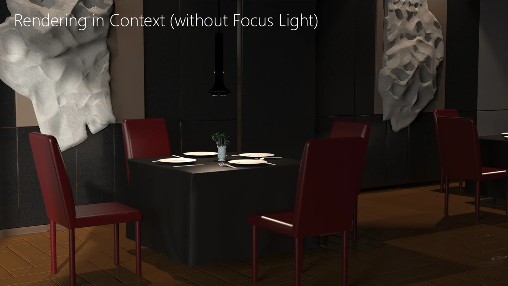
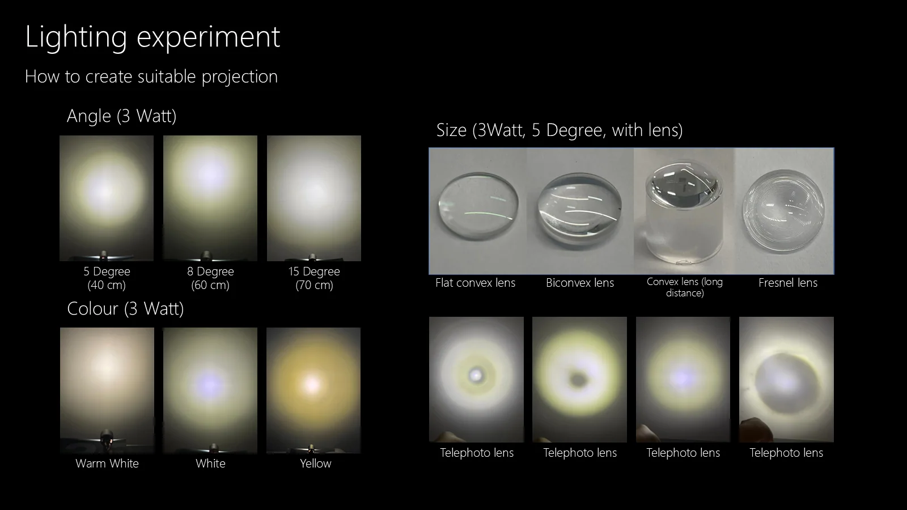
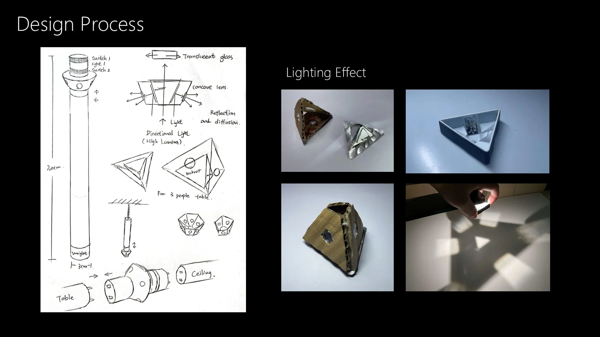
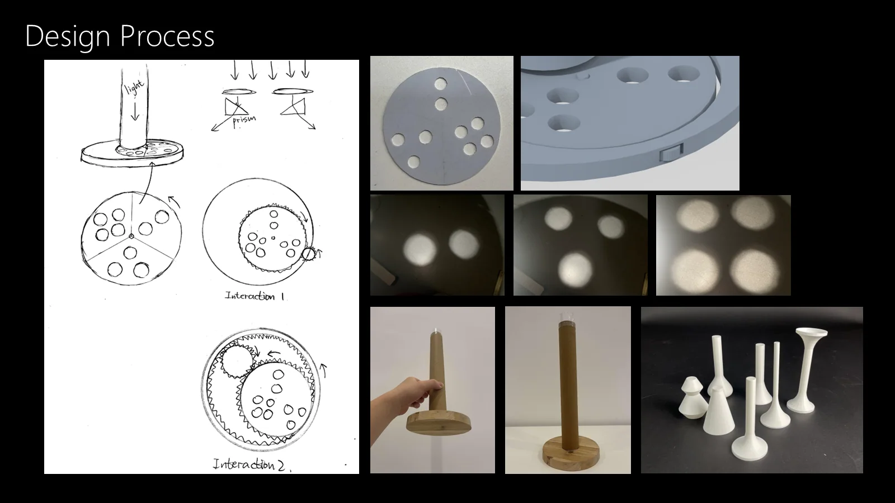
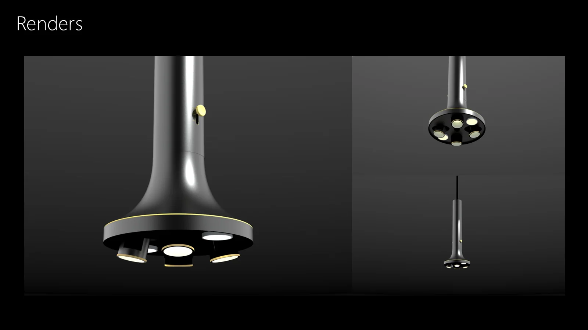
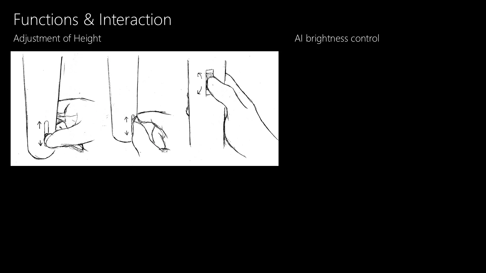
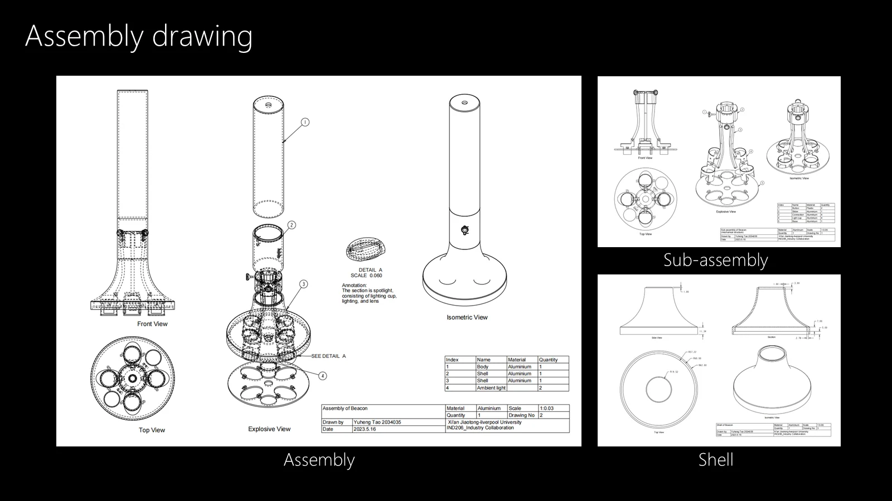
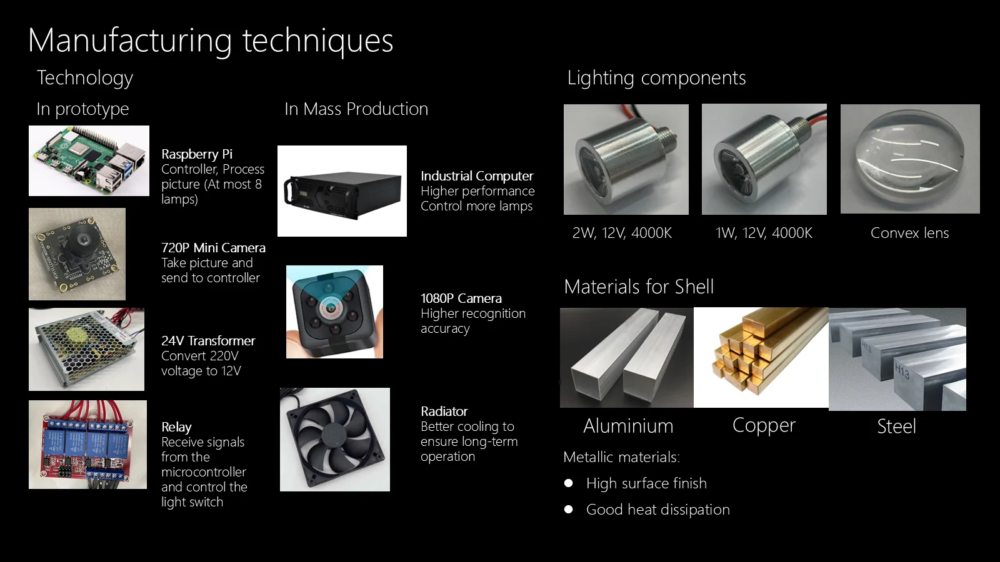

05 · INTELLIGENT PRODUCTS & LIGHTING
Beacon
A pendant light that gives each plate its own field of attention.
Beacon explores how focused light can change the experience of dining. A cluster of concealed light sources creates defined pools of illumination on individual plates while the surrounding table remains quiet and atmospheric.
The project combines optical experiments, an adjustable pendant structure, and a vision-assisted control concept. Instead of illuminating the whole table uniformly, Beacon treats light as a material that can organise attention around food and conversation.

Lighting Research · Industrial Design · Optical Prototyping · Interaction Design · Model Making
01
Lighting shapes what the table asks us to notice
Restaurant lighting sets a mood, but it can also direct attention with precision.
High-end dining rooms often balance low ambient light with a sense of ceremony. Broad illumination makes the room legible, yet it can flatten the visual hierarchy of the table. Beacon began with a more specific question: what happens when the meal, rather than the fixture, becomes the brightest object in view?
The design targets the scale of a plate. The pendant sits above the table as a restrained object while several narrow beams establish individual zones of light below.

02
Finding the edge
of the light
Beam angle, colour temperature, lens geometry, and mounting distance determined how the light met the plate.
Small lighting rigs compared warm, neutral, and yellow light, then tested several beam angles and lens types. The goal was a controlled circle large enough for a dinner plate without spilling across the whole table.
These experiments moved the project away from a decorative pendant with a conventional bulb. They established the optical layout as the starting point for the product form.


03
Hiding the source,
revealing the effect
The fixture developed around a concealed ring of directional light modules.
Sketches and models explored how several lights could sit beneath one continuous shell. The resolved pendant uses a long, quiet body and a flared lower section that shields the modules from normal viewing angles. From across the room, the fixture reads as one object. From below, each module can aim toward a separate place setting.
A height-adjustment control allows the lighting footprint to respond to the table and dining arrangement. Material studies compared dark metal finishes with warmer brass and copper accents.


04
Light that responds
to the table
A camera-assisted prototype explored how several fixtures could adapt to changing place settings.
The control concept uses an overhead camera to identify the position of plates and send lighting instructions to a group of pendants. Each fixture can adjust which modules are active, allowing the illuminated pattern to follow the arrangement of the table rather than relying on one fixed spotlight.
This remains a prototype direction rather than a finished machine-learning product. The project demonstrates the interaction logic and control architecture while leaving privacy, recognition reliability, and restaurant deployment as questions for further development.

05
From optical layout
to manufacturable object
Assembly decisions connect the visual restraint of the shell with heat, wiring, and maintenance requirements.
The pendant separates into a suspended body, internal controller, lighting plate, and removable shell. The proposed metal enclosure supports a polished exterior while helping dissipate heat from the LEDs. Lenses and heat sinks sit inside the lower assembly, protected from direct view.
The prototype established the relationship between the long vertical body and the clustered light head. Further development would focus on a smaller control package, refined thermal management, and calibration in a working restaurant.


06
The meal becomes
the centre of the room
Beacon uses darkness and precision together, giving each plate a clear presence without turning the fixture into the main event.
The project treats lighting as an interaction between object, space, and attention. Optical experiments define the beam. The pendant conceals its complexity. A responsive control concept allows the arrangement to change with the table.
Beacon proposes a dining environment where technology remains quiet and the effect becomes immediately visible in the food, the table, and the pace of the experience.
Role: research, lighting experiments, industrial design, optical prototyping, CAD, electronics integration, rendering, and model making.